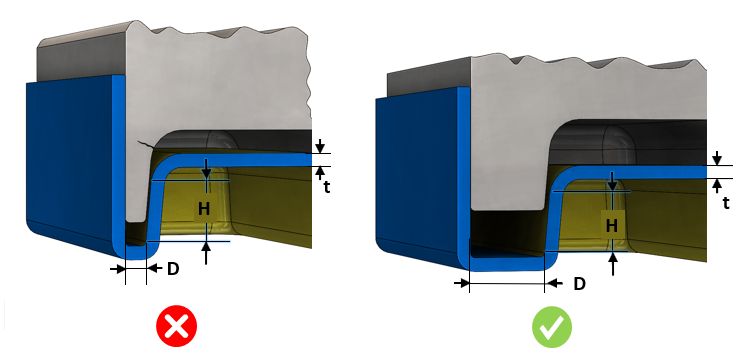

金型壁厚（または公称肉厚に対する比率）は、ユーザーが指定した値より大きくする必要があります。
金型壁厚は、プラスチックモデル内のさまざまなフィーチャー間の間隔によって影響を受けます。リブや互いに近接して配置されたボス、部品の壁、または薄肉領域などに影響を及ぼすフィーチャーが作成されると、冷却が困難になり、品質に影響を与える可能性があります。金型壁が薄すぎる場合、製造自体も困難になり、ホットブレードの発生や不均一な冷却といった問題により、金型寿命が短くなる結果を招くことがあります。
許容される最小金型壁厚は、成形プロセスおよび材料の検討に基づいて決定する必要があります。ただし、射出成形プラスチック部品のフィーチャー間に 1 mm のクリアランスを確保することは妥当であり、その結果として同程度の金型壁厚を確保することが可能です。
このルールを構成するには、金型壁厚の絶対値、または部品の公称肉厚に対する比率を使用します。
場合によっては、面高さが非常に小さいことで金型壁厚の違反として検出されることがあります。このようなケースを回避するために、入力として「Consider Face Height (H) >= <Value> mm」を設定することができます。
面高さが小さい場合、金型が破損または曲がる可能性はごくわずかです。しかし、面高さが大きくなると、その可能性は非常に高くなります。
ルール UI では、材料の一覧は Map Material から読み込まれ、ユーザーは材料およびそれぞれの値を構成することができます。
材料とその値を構成した後、ユーザーは Ctrl+M コマンドを使用して、ルール UI 上で Material Group およびグレードとともに構成済み材料の一覧をフィルタリングして表示できます。同じキー（Ctrl+M）を使用してフィルターをリセットすることもできます。

ここで、
D = フィーチャー間の距離
H = 面高さ
t = 公称肉厚